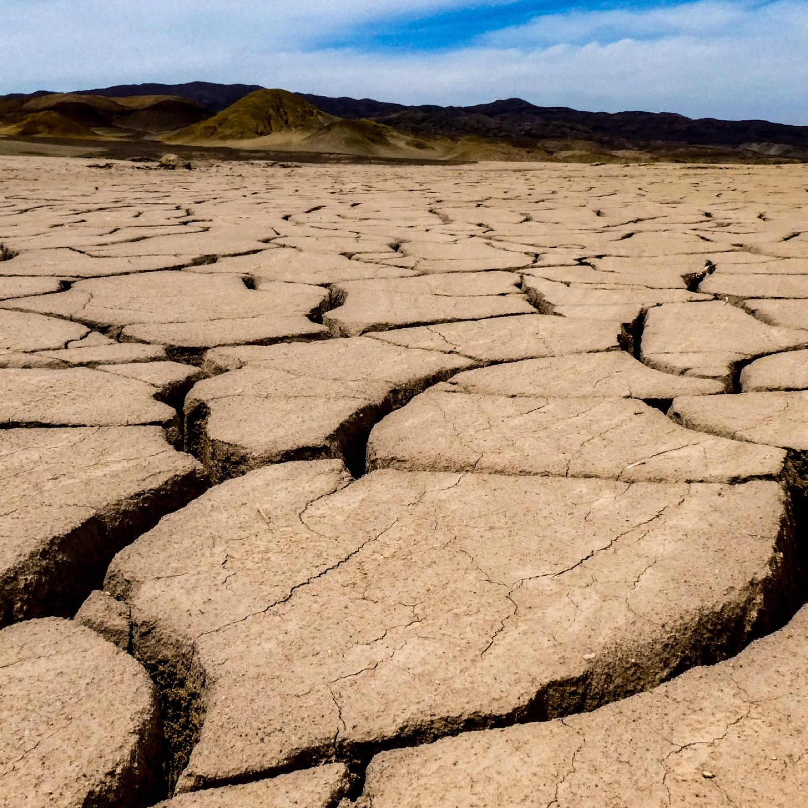
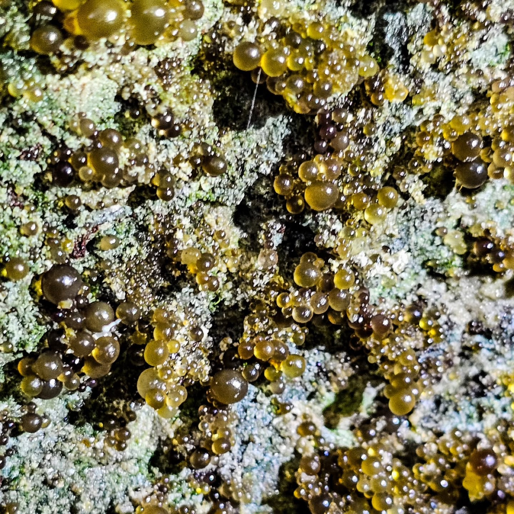
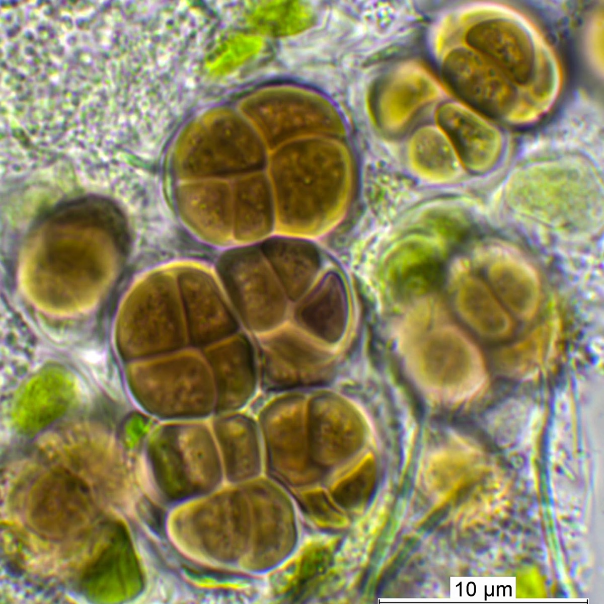

Foto: Dr. Patrick Jung (@selectedplants), DuplexLeben aus Nebel.
An einem der trockensten Orte der Welt regnet es fast nie. Trotzdem wächst dort eine Kruste aus Flechten. Ihr Wasser kommt aus dem Nebel.

Foto: Dr. Patrick Jung (@selectedplants)[Hier läuft das Erlebnis der Gruppe: 3D-Viewer, Video, VR-Start oder Canvas. Innerhalb dieser Fläche gestaltet jede Gruppe frei.]
Erkunde die Kruste.
Dreh, zoom und tauch ein: vom Wüstenboden bis zu den einzelnen Zellen.
Lädt erst nach dem Klick, ca. [24] MB. Keine externen Dienste.
Wie überlebt man ohne Regen?
An der Küste der Atacama-Wüste regnet es fast nie. Wasser bringt nur der Nebel, dort Camanchaca genannt. Er zieht vom Pazifik heran und hängt ein paar Stunden als Tropfen am Boden. In diesem kurzen Fenster lebt die Grit Crust: eine Haut aus Mikroben, die sich um millimetergroße Granitkörnchen legt. Neue Forschung zeigt, dass diese Kruste selbst eine Flechte ist, also eine enge Lebensgemeinschaft aus Pilz und Alge.
Nach Dr. Patrick Jung, selectedplants.de

Vertiefen
Methode
Das Team hat Dutzende Proben entlang eines Nebelgefälles genommen, von nebelreichen Orten an der Küste bis ins trockenere Inland. Mit Metabarcoding, also dem Auslesen kurzer Erbgut-Abschnitte aus einer ganzen Probe, wurde bestimmt, wer in der Kruste lebt: Bakterien, Algen und Pilze.
Was die Daten zeigen
Die Kruste ist wie eine Flechte aufgebaut, nicht wie ein Bodenmikrobiom, also die Mikrobengemeinschaft eines Bodens. Im Zentrum steht die Grünalge Trebouxia. Helle Krusten sind ein frühes Stadium mit mehr Vielfalt. Schwarze Krusten sind älter und enthalten viel mehr Biomasse. Ein großer Teil der Erbgut-Abschnitte passte zu keinem Eintrag in den Datenbanken. Das deutet auf noch unbeschriebene Arten hin.
Gestaltung
[Wie die Gruppe aus der Forschung ein Erlebnis gemacht hat: Ideen, Prototypen, Entscheidungen.]